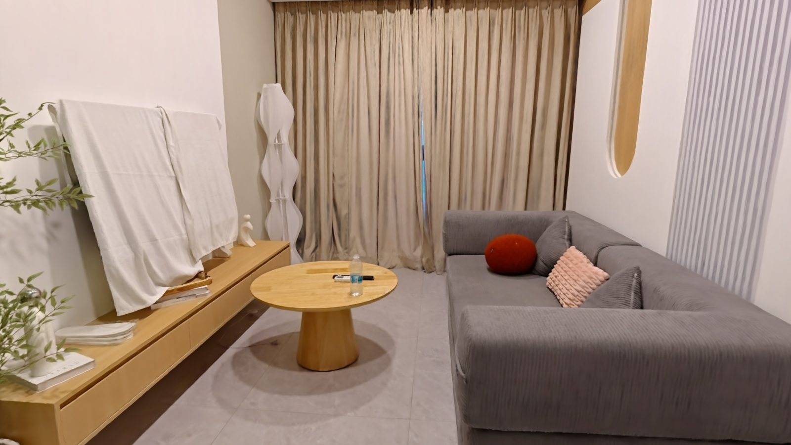
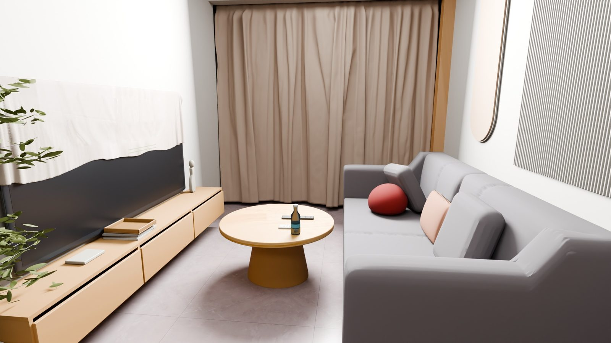

Real-to-Sim
A single scan of a real home becomes an interactive digital twin, built in the scan's own metric frame.


↔
3DGS · realSimulator
2
- Input
- A captured scene with metric geometry and appearance
- Output
- A simulator scene of 107 objects, 73 of them interactive
- Checks
- Scale, gravity alignment, collision geometry, visual correspondence
2.5 cmmedian gap to the scan
79%of pixels within 5 cm
3TV cover · clothRound cushion · soft bodyRemote → TV · buttonKitchen lights · buttonFaucet · fluidTowel, cabinet door · hingeFridge doors · articulated